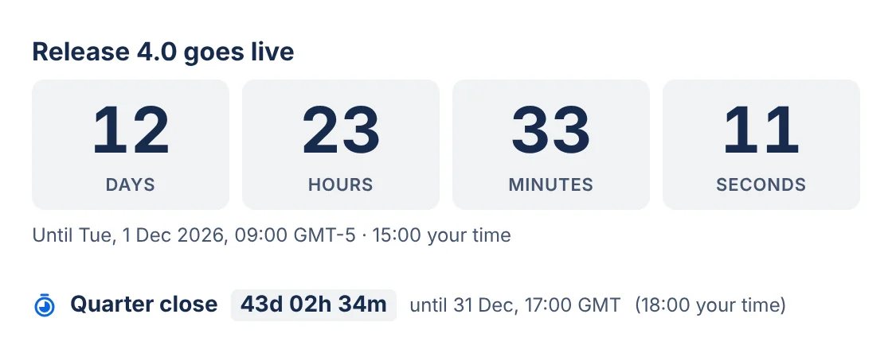
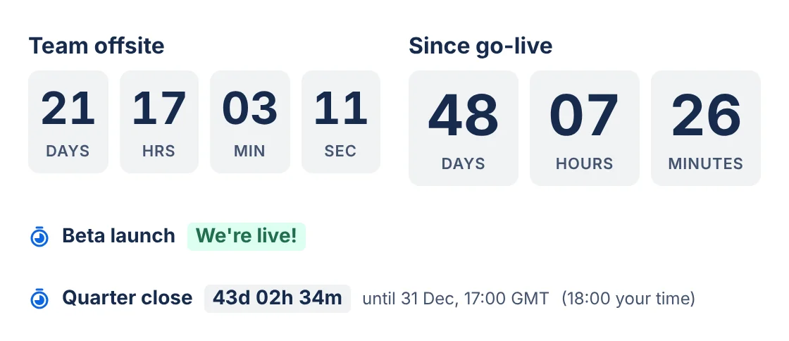
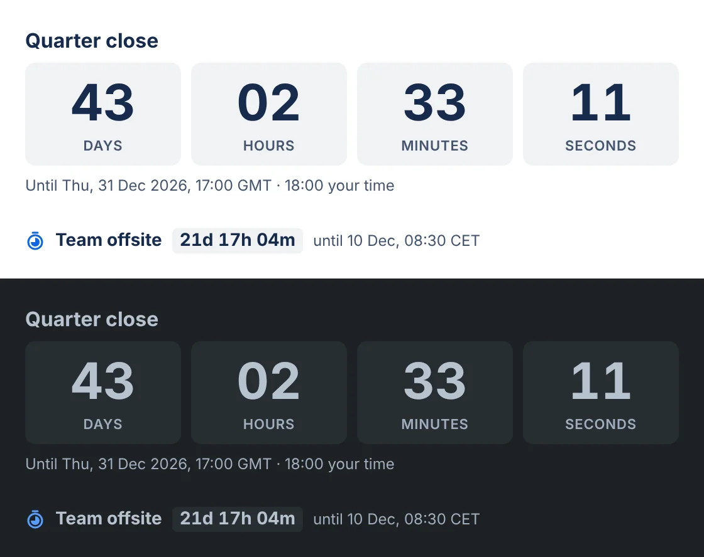

Live Countdown · Confluence macro
A live countdown in Confluence.
Count down to a release, a launch, an event or a deadline, or count up from a past moment. Pick the date, the time and the time zone. The clock ticks for everyone who opens the page.
Submitted to the Atlassian Marketplace on 29 October 2026, waiting for approval.

One moment, the same for every reader
The countdown reaches zero at the same instant for everyone, wherever they are. Readers in another time zone also see the moment in their own time. Show it as a large card or as one compact line.


Runs in the reader's browser
The macro runs on Atlassian Forge. Its settings are saved in the macro on the Confluence page. The countdown is worked out in the browser of the person viewing the page. The app asks for no permissions, stores nothing and makes no network calls, and nothing is sent to Dortus.
- Platform
- Atlassian Forge macro
- Permissions
- None
- Settings
- In the macro on the page
- Sent outside Atlassian
- Nothing
Documentation
How to add a countdown, what each setting does, and what to do when something looks wrong.
On this page: What it does · Add a countdown · Settings · Time zones and summer time · Card or compact line · Counting up · When the time is up · Language and 12 or 24 hours · Light and dark · Where it works · Limits · Troubleshooting · Privacy and security · Contact
What it does
Live Countdown for Confluence adds a countdown macro to Confluence Cloud pages. It counts down to a date and time, such as release day, a launch, an event or a deadline. It can also count up from a past moment, for example the days since the last incident.
The clock ticks on the page for everyone who opens it, and everyone counts to the same moment.
Add a countdown to a page
- A Confluence admin installs Live Countdown for Confluence from the Atlassian Marketplace.
- Edit a Confluence page and type
/countdown. Choose Countdown timer. - The settings dialog opens with a preview on the right. Fill in the moment (see Settings) and click Insert.
- Publish the page. The countdown ticks for everyone who opens it.
To change a countdown later, edit the page, select the countdown and click the pencil (Edit). Click Save when you are done.
Settings
| Setting | What it does |
|---|---|
| Title | Optional. Shown above the clock, for example "Release 4.0". |
| Count | Down to a moment (a countdown) or Up since a moment (time since, for example "days since the last incident"). Before the start, a count-up shows "Not started yet". |
| Date, Time | The moment itself. Leave the time empty for 00:00 (midnight). The dialog says so under the field. |
| Time zone | The time zone the date and time belong to. Your own zone and the common ones (UTC, London, Amsterdam, Berlin, Paris, New York, Chicago, Denver, Los Angeles, Sydney, Tokyo, Kolkata) are at the top. Type in the search box above the list to find any other: a city ("york"), a region ("pacific") or an offset ("+05:30"). Enter picks the first match. |
| Show | Days to seconds, Days to minutes or Days only. Days only counts calendar days in the event's time zone and shows "Today" on the day itself. |
| Style | Card: large tiles. Compact line: one short line in its own block. See Card or compact line. |
| When the time is up, show | The text that replaces the clock once the moment has passed, for example "We're live!". Leave it empty to keep the clock at zero. Count-ups don't use it. |
| Show the date and time under the countdown | Shows the moment with the clock, for example "Until Tue, 1 Dec 2026, 09:00 CET". |
Keyboard. Tab moves through the fields, and the arrow keys change the choice within Count, Show and Style. Enter in a text, date or time field saves. Escape closes the dialog without saving, like Cancel and without asking, but only when you are not in a field. Inside a field, Escape belongs to that field: it closes the date picker or the time zone list, or clears the search.
Time zones and summer time
- Everyone counts to the same moment. The countdown reaches zero at the same instant for every reader, wherever they are.
- Readers in another time zone also see their own time. For example, under "Until Tue, 1 Dec 2026, 09:00 CET", a reader in London sees "· 08:00 your time". This shows in both styles, but only when the date is shown and the reader's clock reads differently.
- Summer time is handled. 09:00 on a date in July means 09:00 summer time, whatever the clocks say on the day you set it up.
- Times that don't exist, or happen twice. When the clocks go forward, 02:30 is skipped. The countdown then uses 03:30, the time it would have been. When the clocks go back, 02:30 happens twice, and the countdown uses the first one. The settings dialog shows a note in both cases.
- The clock counts real time. Over a weekend when the clocks go forward, Saturday 09:00 to Monday 09:00 shows 1 day 23 hours, because that is all the time there is. Days only counts calendar days, so it shows 2 days.
- Rounding. A countdown rounds up to the smallest unit it shows. With 4.2 seconds left it shows 5, so it never reads zero before the moment itself. A count-up rounds down, like a stopwatch.
- The countdown uses the reader's own computer clock. It needs no internet connection to keep time. If a computer's clock is wrong, its countdown is wrong by the same amount.
Card or compact line
Card shows the time in large tiles, with the title above. Compact line shows the countdown as one short line, handy in a table cell or a narrow column.
The compact line sits in its own block. You can't place it inside a sentence, because the macro is a block, not inline.
In narrow places, such as layout columns and table cells, the tiles of a card shrink so they stay on one row. In very narrow cells they become one line of text.
Counting up
Choose Up since a moment under Count to show the time since a moment, for example the days since the last incident or since go-live. Before the start, a count-up shows "Not started yet". A count-up rounds down, like a stopwatch, and doesn't use the end text.
When the time is up
Fill in When the time is up, show to replace the clock with your own text once the moment has passed, for example "We're live!". Leave it empty to keep the clock at zero.
Language, date format and 12 or 24 hours
Dates and times follow the language set in each reader's Atlassian account, which is the one Confluence itself uses. That includes 12- or 24-hour time, for example "Tue, Dec 1, 2026, 9:00 AM" in English (US) and "di 1 dec 2026, 09:00" in Dutch.
The words (days, hours, Until) are in English for now.
Light and dark
The countdown uses Atlassian's design colours and follows Confluence's light or dark theme. There is nothing to set.
Where it works
- On pages, in the editor and in Confluence's preview.
- In layout columns and table cells. The tiles shrink so they stay on one row, and in very narrow cells they become one line of text.
- In an Expand. The clock pauses while the Expand is closed and is drawn correctly when you open it.
- With many countdowns on one page. Only the ones on screen tick, and none tick while the browser tab is in the background.
Limits and what is not confirmed yet
- Confluence Cloud only. Not Confluence Data Center or Server.
- Not inside a sentence. The macro is a block. The compact line is its smallest form.
- Words in English. Dates and times follow each reader's language. The words on the countdown are in English for now.
- The reader's clock. The countdown is as right as the clock of the computer it runs on.
- Very old browsers. A browser that doesn't know the saved time zone uses UTC instead, and the countdown says so. See Troubleshooting.
Not yet confirmed. We have not tested these in Confluence yet, so we don't promise them:
- PDF and Word export: how a countdown shows in an exported file.
- Include Page and Excerpt Include: a countdown on a page that is included in another page.
- Tabs: a countdown inside a tab that is not open.
- Screen readers: how the countdown sounds with a screen reader such as VoiceOver or NVDA.
If you rely on one of these, try it on a test page first, and tell us what you see.
Troubleshooting
| You see | What it means |
|---|---|
| "No date yet. Edit this macro to pick the moment to count down to." | The countdown has no valid date. Edit it and pick one. |
| "The countdown could not load. Reload the page to try again." | Confluence did not hand the countdown its settings in time, or its script did not load. Reloading the page usually fixes it. |
| "Time zone "…" is not known here, so UTC is used." | The saved time zone isn't known to this browser, for example a very old browser. Edit the countdown and pick the time zone again. |
| A note in the settings dialog about a skipped or repeated time | The time falls in the hour the clocks change. The note says which time the countdown uses. See Time zones and summer time. |
| The clock is a few minutes off | Check the clock on the reader's computer. See Time zones and summer time. |
Privacy and security
Where is data stored? The app stores nothing. The settings of a countdown (title, date, time, time zone and display options) are saved in the macro on the Confluence page, like the settings of any Confluence macro. They follow the page's permissions and its version history. The app has no app storage, and it uses no cookies or other storage in the browser.
What permissions does the app ask for? None. The app asks for no access to your Confluence site: no pages, no users, no spaces.
Where does the countdown run? In the browser of the person viewing the page. The app makes no network calls and loads no fonts, images or scripts from elsewhere.
What does the app send outside Atlassian? Nothing. There is no Dortus server behind the app, and nothing is sent to Dortus or to any third party. The app writes no log lines.
Is there a part that runs outside the browser? One, inside Atlassian. For a PDF or Word export, Confluence calls the app's export function on Atlassian's Forge platform. Confluence sends it the macro's settings, and the function returns a line of text for the export file. It calls nothing else, stores nothing and has no internet access.
What happens if I uninstall? Nothing to clean up, because the app stored nothing.
The app is built on Atlassian Forge, for Atlassian's Runs on Atlassian programme. Full policy: Privacy policy, section 3.6. Terms: Terms of service.
Contact
Questions, a bug, or an idea? Email support@dortus.com. The person who builds the app reads every message. Please include your site URL, a link to the page, your browser and time zone, what you expected and what happened.